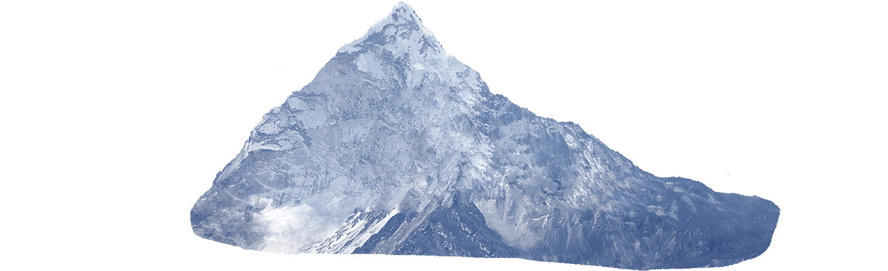
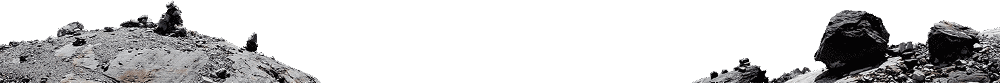
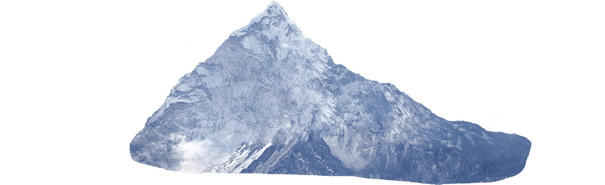
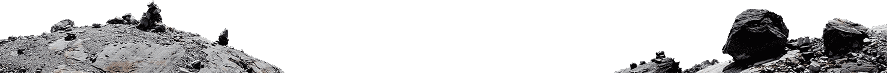

Google Glass
Hardware and Software
Preliminary Round
Limitless Possibilities
Moving Forward
Google is a multi-billion dollar technology company that specializes in web-services, software, and hardware. With its popular Google search engine, Chrome web browser, and various pieces of hardware, it's only fitting that Google became a pioneer in the augmented reality business. The company's product, Google Glass, is an optical head-mounted display in the form of a pair of glasses.
Initially, the product was intended to be an ubiquitous computer that would allow the user to access the Internet. In addition, it displayed information through a hands-free method, in the same manner that one would see on a smartphone. For example, if the user were walking on the street in search of a restaurant, he or she could immediately Google search for local eateries with a simple tap on the Google Glass. The apparatus utilizes a camera, touch pad, liquid crystal on silicon, complex color system, and LED illuminated display.
The concept was novel. It was bright and new to the tech world. Why pull out your phone, unlock it, and type phrases into the Google search engine...when you can just instantly view such information through a hands-free method? The world, both digitally and physically, could be seen right in front of your eyes. Multi-tasking can prove to be extremely efficient...but there are a few cons.
Although Google terminated production of the Google Glass, it indeed provided valuable insight to the future of the AR field. People started to steer clear of the multi-tasking aspect of the Google Glass due to physical safety concerns. Today, wearable AR technology, such as castAR and Meta, is mainly focused on specific tasks in order to prevent intrusion into the wearer's field of view. This may be the case now; however, the future of AR is still aimed towards access to omnipresent information without the obstruction of the user's visual standpoint.
 


